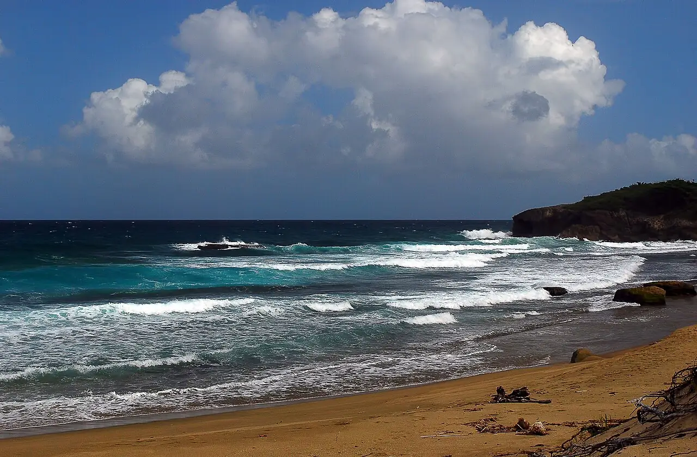

Jobos Beach
Isabela, Porto Rico · surf, bodyboard

Plage du nord-ouest de Porto Rico, connue pour sa droite qui déroule le long du récif. L’ambiance est animée à terre, avec restaurants et bars face à l’eau.
- Lieu
- Isabela, Porto Rico
- Niveau
- Intermédiaire
- Activités
- surf, bodyboard
- Type d'eau
- Mer / océan
- Coordonnées
- 18.51, -67.08 (position approximative du secteur)
Dangers à connaître
- Courants dangereux signalés par des panneaux : la baignade y est risquée.
- Récif peu profond sous la vague.
Le conseil d'Ocean Buddy
Ne va sur la vague du récif que si tu maîtrises bien le take-off ; en hiver, la houle du nord peut la rendre puissante.
Ouvrir dans Ocean Buddy Télécharger sur l'App Store
Source : Fiche Ocean Buddy · septembre 2026 · à vérifier localement.